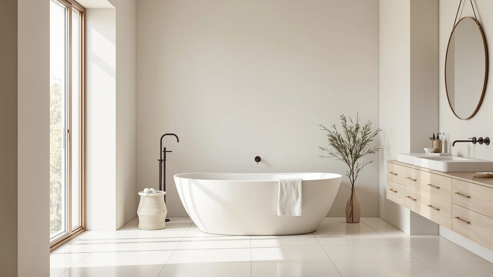

Freestanding Tub Hardware Finishes (2026): Chrome vs Brushed Gold vs Matte Black vs Brushed Nickel
Prices and picks verified as of August 2026. Independent, reader-supported reviews.


Things to Know Before You Buy
- Matte black and brushed gold cost more per fixture than chrome because both rely on a physical vapor deposition (PVD) coating rather than simple electroplating.
- Mixed metals work in the same bathroom if one finish clearly dominates and a second appears only in small accents, like a mirror frame or towel bar.
- Chrome shows water spots fastest of the four finishes but is also the cheapest and easiest to keep clean.
- Brushed nickel hides fingerprints and hard water residue better than any polished finish, which matters most in households with several daily users.
- Not every "matte black" listing uses the same coating. Cheaper versions on a zinc alloy body wear at contact points within a year, while brass-bodied versions hold up far longer.
Choosing a freestanding tub hardware finish is one of those small decisions that ends up shaping how the whole bathroom reads, because the faucet, drain, and overflow plate sit right beside the tub's biggest visual statement. Chrome, brushed gold, matte black, and brushed nickel all catch light differently against white acrylic, and picking one at random rarely ends well.
This guide breaks down what separates those four finishes: how each one resists water spots and fingerprints, which design styles they pair with, and where the price gap actually comes from. We compared manufacturer specs, plumbing supply pricing, and verified owner reviews across dozens of freestanding tub fixture sets to figure out what holds up past the first year.
You will also find our current pick list for freestanding tubs that work with any hardware finish, along with answers to the questions people ask most before they order fixtures. Start with the finish, then build the rest of the fixture set around it.
What You Need to Know
A freestanding tub hardware finish covers more than the faucet. It includes the drain and overflow cover, the supply lines that run up from the floor or wall, and on floor-mount fillers, the exposed pipe itself. All of those pieces need to match, or the tub area looks unfinished even when each individual fixture is well made.
Manufacturers create finishes through electroplating or physical vapor deposition (PVD). Chrome is electroplated, which is the cheapest process and why it remains the default option on most freestanding tub filler sets. Brushed nickel, brushed gold, and matte black typically use PVD, a process that bonds a harder coating to the base metal and resists scratching better than standard electroplating. That extra durability is also why those finishes cost more, sometimes $100 to $300 more per set than chrome.
Base metal matters as much as the finish layer. Solid brass fixtures with a PVD coating hold up far longer than zinc alloy fixtures with the same finish sprayed on top, even though they can look identical in a product photo. Reviewers consistently note that budget matte black sets develop a bronze or gray patina at contact points, like the handle and diverter, within six to twelve months, while brass-bodied versions stay even.
Before you shop, check whether the finish name refers to the coating process or only the color. A listing that says "matte black" without mentioning PVD or brass construction is worth a closer look at the return policy.
Types and Categories
Chrome remains the most common freestanding tub hardware finish because it is affordable, reflective, and easy to find in matching sets from almost every plumbing brand. Its downside is visibility: water spots and soap residue show up immediately on a polished chrome surface, so it needs wiping down more often than the other three finishes.
Brushed nickel has a warmer, slightly matte gray tone that hides fingerprints and hard water marks better than chrome. It pairs well with both traditional and transitional bathrooms and sits in the middle of the price range, above chrome but usually below matte black or brushed gold.
Matte black has become the default choice for modern and industrial-style bathrooms over the past several years. It hides water spots almost completely, which makes it low-maintenance day to day, but any scratch or chip is more visible against the dark surface than it would be on a lighter finish.
Brushed gold, sometimes labeled brushed brass, reads warmer and more traditional than polished gold, which most brands have phased out. It works in bathrooms with warm wood tones or brass lighting fixtures, and it tends to be the most expensive of the four because of the extra plating layers needed to keep the color from shifting toward yellow or bronze over time.
A few brands still sell oil-rubbed bronze and polished brass, but both have narrower style niches and are harder to match across a full fixture set.
How to Choose
Start with what is already fixed in place. If your shower fixtures, cabinet hardware, or lighting are staying put, match the new freestanding tub hardware finish to whichever metal already dominates the room instead of introducing a third tone. A bathroom with brushed nickel shower hardware and matte black tub fixtures can work, but only if black repeats somewhere else in the room, like a mirror frame or light fixture, so it reads as intentional.
Think about how much upkeep you actually want. Chrome and polished finishes need wiping after nearly every use to avoid visible spotting, which matters if the tub sits in a household with hard water or several daily users. Matte black and brushed nickel forgive more between cleanings, since neither shows water spots the way a mirror-polished surface does.
Budget affects this decision more than most buyers expect. A full freestanding tub fixture set, including filler, drain, overflow, and supply lines, can run from around $150 in chrome to $500 or more in brass-bodied matte black or brushed gold. If the budget is tight, spend on brass construction with a basic finish rather than a premium finish on a zinc alloy body. Base metal is what determines whether the fixture still works properly in five years.
Consider resale only if you plan to sell within the next few years. Chrome and brushed nickel remain the safest choices for buyers who want broad appeal, since both read as neutral to most house hunters. Matte black and brushed gold are more polarizing choices that can date a bathroom faster if design trends shift, though neither is likely to hurt a sale on its own.
Common Mistakes to Avoid
The most common mistake is choosing a freestanding tub hardware finish before checking what is already installed elsewhere in the room. Buyers often fall for a finish they like in a showroom photo, then discover it clashes with a vanity faucet or towel bar they had no plans to replace.
Another mistake is assuming every product labeled with the same finish name will match. Chrome from one brand can run slightly warmer or cooler than chrome from another, and the difference becomes obvious once both pieces sit next to each other under bathroom lighting. Buy the filler, drain, and supply lines from the same manufacturer and finish line whenever possible.
Skipping the base metal check causes problems later. A zinc alloy body with a matte black coating costs less upfront, but the coating tends to flake at high-contact points like the handle, where a brass body tends to wear smooth instead. Owners report replacing budget fixtures within two to three years for this exact reason.
Finally, do not ignore water hardness. Homes with hard water leave more visible mineral buildup on chrome and polished finishes, so a household on well water or unsoftened municipal supply may get more practical use out of brushed nickel or matte black, regardless of style preference.
Care and Maintenance
Daily care is mostly about drying, not scrubbing. Wiping the faucet, drain cover, and supply lines dry after each use prevents most of the water spotting that shows up on chrome and brushed nickel, and it keeps mineral deposits from building into a stubborn film.
For regular cleaning, a soft microfiber cloth with mild dish soap and water handles nearly every freestanding tub hardware finish safely. Skip abrasive powders, scouring pads, and anything labeled as a heavy-duty bathroom cleaner, since those products can dull PVD coatings and strip the protective layer off matte black and brushed gold within months.
Vinegar works for dissolving mineral deposits on chrome, but it is too acidic for matte black and brushed gold finishes and can strip the color unevenly. If mineral buildup is heavy, a finish-safe descaler made for the specific coating is worth the extra cost over a generic vinegar solution.
Check supply line connections and the drain assembly for slow leaks every few months. A small drip at a fitting will etch a permanent mark into matte black or brushed gold faster than it would show on chrome, since darker and warmer finishes reveal water etching more clearly than a bright polished surface does.
Our Top Picks
These freestanding tubs pair cleanly with any of the four hardware finishes above, since their plain acrylic shells stay neutral regardless of what metal you choose for the filler and drain.

Editor's Pick
WOODBRIDGE 67" Acrylic Freestanding Bathtub
A wide, deep acrylic shell that works with chrome, matte black, or brushed gold hardware without competing with the finish you choose.
$758.00
Check Price on Amazon
Best Value
WOODBRIDGE 67" Acrylic Freestanding Bathtub
The same 67-inch WOODBRIDGE shape at a different price point, a solid match for brushed nickel or matte black fixture sets.
$821.25
Check Price on Amazon
Premium Choice
WOODBRIDGE 59" Acrylic Freestanding Bathtub
A smaller 59-inch footprint for tighter bathrooms, still neutral enough to pair with any of the four finishes above.
$853.99
Check Price on AmazonFrequently Asked Questions
Can you mix metal finishes in a bathroom with a freestanding tub?
Yes, as long as one finish clearly dominates. Pick a primary metal for the tub filler, drain, and supply lines, then let a second finish show up only in accents like a mirror frame or towel bar. Splitting a room evenly between two finishes usually reads as unplanned rather than intentional.
What is the most durable freestanding tub hardware finish?
Brass fixtures with a PVD coating hold up longest, regardless of which color you choose. The base metal matters more than the finish name: a brass body with a basic chrome finish will outlast a zinc alloy body with an expensive matte black coating.
Does matte black hardware scratch easily on a freestanding tub?
It can, especially on budget fixtures with a zinc alloy body. The coating on brass-bodied matte black hardware resists chipping much better, but any finish will show wear at high-contact points like the handle and diverter over several years of daily use.
Is brushed gold hardware going out of style?
Brushed gold has held steady in demand since replacing polished gold as the warm-metal option of choice, and reviewers consistently note it pairing well with both traditional and modern bathrooms. It is a safer long-term bet than a trend finish, though any warm metal will eventually cycle in and out of favor.
How do you clean chrome tub fixtures without damaging the finish?
A soft microfiber cloth with mild dish soap and water removes most residue safely. Skip vinegar-based descalers for regular cleaning since repeated use can dull the surface, and save them for occasional heavy mineral buildup only.
Verdict
Picking a freestanding tub hardware finish comes down to two questions: what is already installed in the room, and how much upkeep you are willing to do. Chrome stays the cheapest and most available option, but it shows water spots faster than anything else on this list. Brushed nickel splits the difference between cost and low maintenance, matte black hides water spots almost entirely but reveals scratches more clearly, and brushed gold delivers the warmest look at the highest price, mainly because of the plating work needed to keep the color from drifting toward bronze.
Whatever finish you land on, buy the filler, drain, and supply lines as a matched set from one manufacturer, and check that the base metal is brass rather than a coated zinc alloy before you add anything to the cart. If you are shopping for the tub itself at the same time, the WOODBRIDGE 67" Acrylic Freestanding Bathtub in our picks above works with any of the four finishes, since its plain white shell was built to let the hardware do the talking.